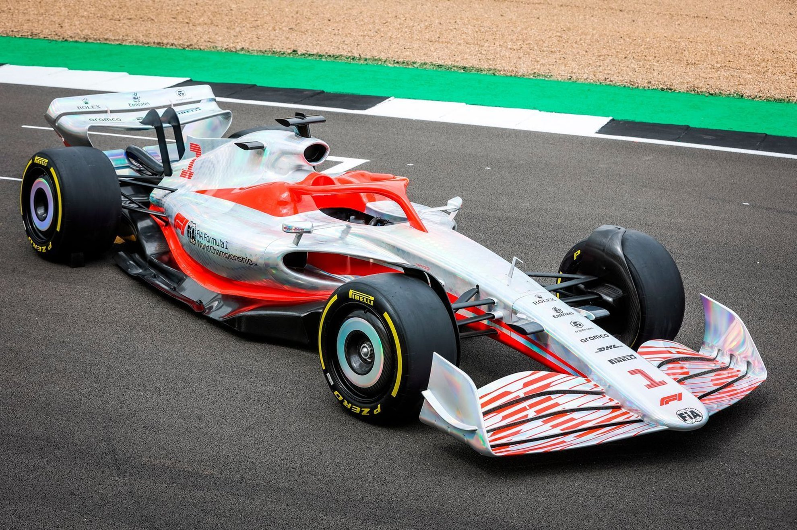

Cars
Best Of All Time
Formula One: the pinnacle of motor racing; where designers spend millions of dollars seeking to shave milliseconds off lap times. In 60 years, the presence of aerodynamics in Formula One has gone from being non-existent to an integral factor in a car's performance, all to produce downforce. The role of aerodynamics in F1 is similar to that in road cars: to reduce drag and to increase stability.
A Formula One car is an open-wheel, open-cockpit, single-seat racing car for the purpose of being used in Formula One competitions. It is equipped with two wings (front and rear) plus an engine, which is located behind the driver. ChassiS: Every F1 car is composed of two main components, the chassis and the engine. Geabox: Semi-automatic sequential carbon titanium gearboxes are used by F1 cars presently, with 8 forward gears and 1 reverse gear, with rear-wheel drive.